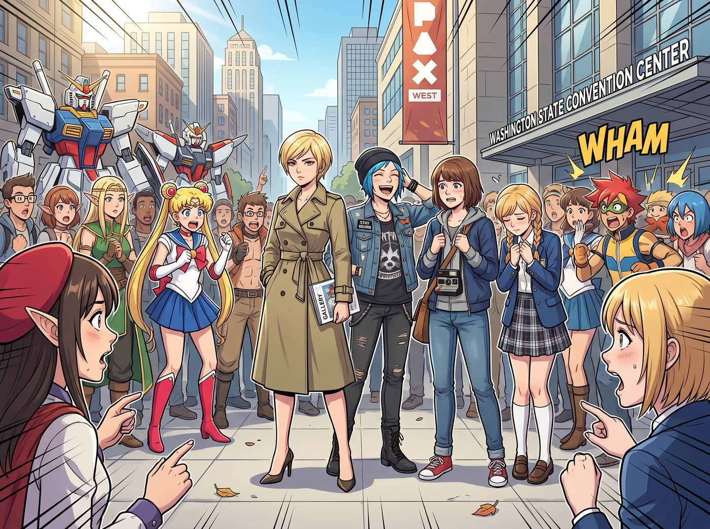
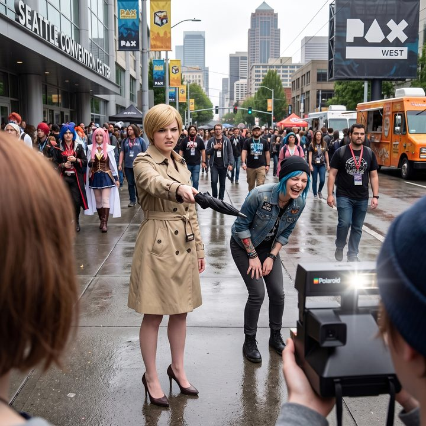
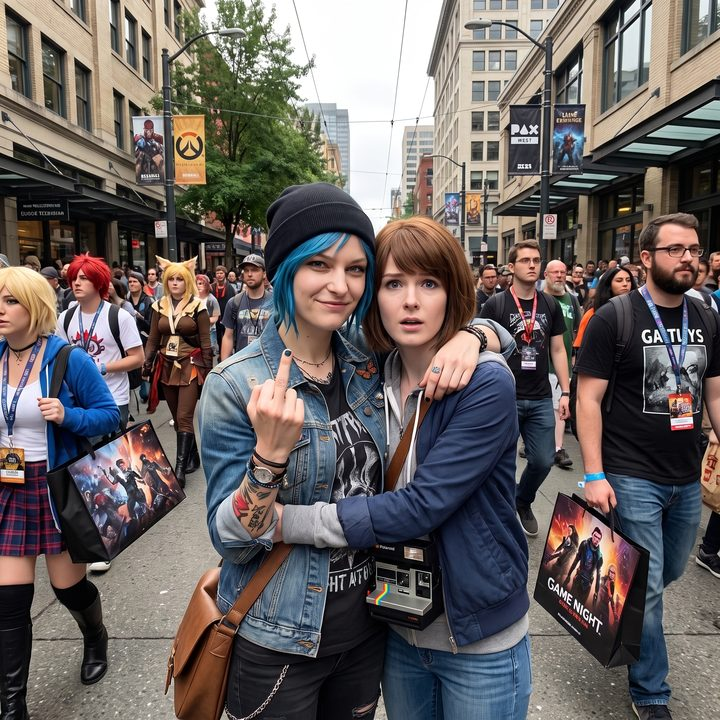

破次元的Cosplay神話



西雅圖市中心的九月初，PAX West 遊戲展的狂熱氣氛席捲了整個街區。二號車廂小分隊原本只是陪 Victoria 去市中心的一家私人美術館看預展，卻無可避免地被迫穿過了華盛頓州會議中心外那片擠滿了精靈耳、巨型機甲和二次元水手服的 Cosplay 廣場。
這四個自帶極強視覺衝擊力的實體存在，走進這片區域的瞬間，就等於把一滴沸水滴進了熱油鍋。
一、神級降臨
最先發現她們的，是一個扛著長焦鏡頭的展會街拍攝影師。他原本正在拍一組其他遊戲的 Coser，餘光掃過人群時，鏡頭猛地定住了。
「老天……這組《奇異人生》的 Cosplay 也太硬核了吧？！」
隨著攝影師的一聲驚呼，周圍幾個正坐著休息的玩家和 Coser 齊刷刷地轉過頭。在他們的視角裡，這簡直是打破次元壁的神級降臨：那個藍頭髮女孩不僅髮色自然到沒有一絲假髮的反光，手臂上的刺青圖案精確到毫米，甚至連她那件破洞工裝背心上沾著的機油污漬，都透著一股無可挑剔的真實工業味。而她旁邊那個短髮女孩，脖子上掛著一台磨損得恰到好處的真實復古拍立得，正用一種極度社恐且無辜的眼神看著人群。
最絕的是那個穿著卡其色風衣的金髮女孩，那種骨子裡透出來的傲慢氣場，簡直是教科書級別的「女王蜂」還原！
不到三十秒，她們就被十幾個激動的玩家和攝影師團團包圍了。
「打擾一下！妳們的 Cosplay 實在太完美了！可以拍張照嗎？」一個男生激動得聲音都在發抖，「尤其是 Chloe！天啊，妳的紋身是怎麼做到這麼逼真的？貼紙在哪買的？！」
Chloe 愣了半秒，隨即她骨子裡那股唯恐天下不亂的街頭叛逆基因瞬間覺醒。她一把將原本想往後躲的 Max 攬進懷裡，對著鏡頭挑起一個極其囂張的招牌壞笑，甚至順手比了個中指：「貼紙？小子，這可是貨真價實的針頭和墨水。想拍照？可以，十塊美金一次，只收現金！」
人群爆發出一陣狂熱的歡呼：「太屌了！連這種在漫展上強行收保護費的流氓性格都完美還原！這就是體驗派演技啊！」
二、名媛的意外爆紅
站在一旁的 Victoria 則完全陷入了名媛的狂暴狀態。她嫌惡地看著一個試圖靠近觀察她衣料的攝影師，本能地用那把昂貴的長柄雨傘在地上重重一頓，眉頭皺得能夾死一隻蒼蠅：「退後，你們這群把聚酯纖維穿在身上的書呆子！我身上這件是純羊絨定制風衣，不是你們從網路上花三十美金買來的廉價道具服！誰敢用你們那沾滿廉價披薩油脂的手指碰我一下，我的律師會讓你們下半輩子都在賠償金裡度過！」
這段毫不留情、極度刻薄的階級霸凌式發言，非但沒有惹怒這群玩家，反而讓現場的氣氛達到了最高潮。
「聽到了嗎！她罵我們是書呆子！」一個女孩激動地捂住嘴，瘋狂按動手機快門，「這簡直是把 Victoria Chase 的靈魂演活了！那種看垃圾一樣的眼神太還原了！女王請再罵我一句！」
Victoria 呆住了。她這輩子面對過無數的商業對手和政客，但從來沒見過有人在被她狠狠羞辱後，居然會露出這種宛如朝聖般狂熱且幸福的表情。名媛的大腦在這群二次元宅文化的衝擊下，出現了短暫的過載當機。
而一向最溫柔的 Kate，則被幾個同樣 Cos 成 Blackwell 學院學生的女孩團團圍住。她們看著 Kate 那純天然的雙麻花辮和毫無化妝痕跡的清透皮膚，驚訝地詢問她的護膚品和假髮連結。Kate 只能無措地雙手交疊，用最溫柔的語氣解釋：「這……這不是假髮呀，我每天早上自己編的。而且我只是用了普通的保濕霜……」
玩家們再次驚呼：「連這種天使般柔弱又無辜的語氣都拿捏了！她甚至自帶聖光！」
三、網路爆紅與私藏的滿足
當晚，這場偶遇就在社群平台上徹底引爆了。帶有相關標籤的帖子迅速衝上了熱門。點讚最高的一條短影音，正是 Victoria 一臉嫌棄地用雨傘指著鏡頭，而 Chloe 在背後笑得前仰後合、Max 躲在相機後面偷拍的畫面。
回到二號車廂後，四個人看著手機上瘋狂跳動的幾十萬點讚和轉發，陷入了詭異的沉默。
Chloe 躺在沙發上，笑得差點把手裡的櫻桃可樂噴出來：「哈哈哈哈！Caulfield，妳看到沒有？有人在評論區說妳的相機是斥巨資打造的高仿道具！還有，大富婆，恭喜妳成功收穫了三萬個喜歡被妳辱罵的互聯網奴隸！」
Max 無奈地推了推眼鏡，看著屏幕上自己那張驚慌失措的抓拍：「我現在比較擔心的是，如果我們真的是某個平行宇宙的遊戲角色，我們今天這種行為算不算是打破了第四面牆，會不會引發時空崩塌？」
Victoria 則坐在中島吧台前，優雅地喝了一口 Kate 剛泡好的洋甘菊茶。她雖然嘴上依然冷哼著「一群缺乏現實社交的網絡游民」，但手指卻極其誠實且迅速地，將那條誇她擁有頂級貴族氣質與無瑕骨相的推文，默默點了一個愛心，並截圖保存在了手機最深處的隱藏相冊裡。